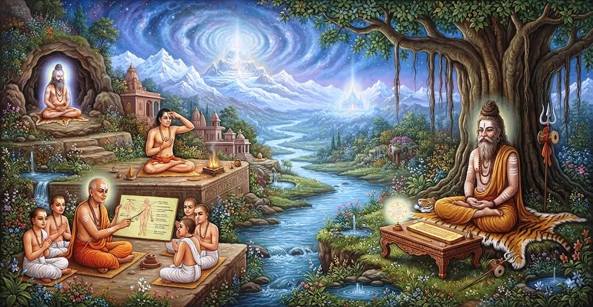

त्याग के मार्ग में न्यास के नियम
कैलाश संहिता का छठा अध्याय न्यास के पवित्र अनुशासन, एक तपस्वी के शरीर पर दिव्य मंत्रों और ब्रह्मांडीय ऊर्जाओं को प्रक्षेपित करने के सूक्ष्म संस्कार को प्रकट करता है।
भगवान शिव बताते हैं कि व्यवस्थित न्यास के माध्यम से, त्यागी के भौतिक शरीर को पवित्र किया जाता है और सर्वोच्च वास्तविकता के साथ सीधे मिलन के लिए उपयुक्त एक दिव्य पात्र में परिवर्तित किया जाता है।
यह आंतरिक समर्पण बाहरी कर्मकांड को गहन योग बोध से जोड़ता है, जिससे हर अंग के भीतर दिव्य उपस्थिति स्थापित होती है।
अध्याय 6 की मुख्य बातें
कारा-न्यासा
क्रिया को आध्यात्मिक बनाने के लिए उंगलियों और हथेलियों पर बीज मंत्रों के स्थान का विवरण।
अंग-न्यासा
शरीर के प्राथमिक अंगों-हृदय, सिर, शिखा, कवच, आंखें और हथियारों के अभिषेक का निर्देश देता है।
प्रणव-न्यासा
संपूर्ण सूक्ष्म शरीर में ओंकार की घटक ध्वनियों का व्यवस्थित प्रक्षेपण प्रस्तुत करता है।
मातृका-न्यासा
विशिष्ट ऊर्जा केंद्रों (चक्रों) में संस्कृत वर्णमाला ध्वनियों के स्थान की रूपरेखा।
शारीरिक रूपांतरण
यह बताता है कि पूजा से पहले नश्वर चेतना को दिव्य प्रकृति तक कैसे उन्नत किया जाता है।
आध्यात्मिक सुरक्षा
आध्यात्मिक रिसाव को रोकने के लिए त्यागी के चारों ओर सुरक्षात्मक सूक्ष्म ढाल स्थापित करता है।
इस अध्याय में मुख्य विषय
न्यासा का सार और आवश्यकता
न्यास भौतिक ढांचे को ध्वनि आवृत्तियों और आध्यात्मिक शक्ति से चार्ज करने की प्रक्रिया है, जो 'केवल शिव ही शिव की पूजा कर सकते हैं' की उक्ति को पूरा करती है।
प्रमुख शारीरिक केंद्रों पर मंत्रों को स्थापित करके, तपस्वी शारीरिक चेतना को विघटित करता है और दिव्य जागरूकता को जागृत करता है।
करा-न्यास और अंग-न्यास की विधि
पवित्र संस्कार (कारा-न्यासा) के लिए हाथों को पवित्र करने के लिए अभ्यासकर्ता संबंधित बीज मंत्रों के साथ प्रत्येक उंगली और हथेली को छूता है।
इसके बाद अंग-न्यास, हृदय (हृदय), सिर (शिरस), शिखा (शिखा), कवच (कवच), आंखें (नेत्र), और सुरक्षा चिह्न (अस्त्र) पर पवित्र सूत्र रखता है।
पवित्र चक्रों के भीतर मातृका न्यास
मातृका-न्यास में 51 पवित्र संस्कृत अक्षरों को केंद्रीय रीढ़ की हड्डी (सुषुम्ना) और बहु-पंखुड़ी वाले कमल (चक्र) में प्रक्षेपित करना शामिल है।
यह मानसिक अज्ञानता को दूर करते हुए, व्यक्तिगत भाषण और विचार चैनलों को ब्रह्मांडीय कंपन पैटर्न के साथ संरेखित करता है।
भस्म अनुप्रयोग को न्यासा के साथ मिलाना
तपस्वी पवित्र वैदिक और तांत्रिक मंत्रों का उच्चारण करते हुए त्रिपुण्ड्र भस्म लगाता है, जिससे न्यासा की प्रभावकारिता बढ़ जाती है।
भौतिक राख और आंतरिक ध्वनि कंपन का संयोजन सांसारिक लगाव के खिलाफ एक अभेद्य ढाल बनाता है।
शिवत्व की प्राप्ति
निर्धारित न्यास को पूरा करने पर, त्यागी सीमित अहंकारी पहचान को त्याग देता है और आंतरिक शरीर को भगवान शिव के मंदिर के रूप में महसूस करता है।
शरीर, मन और वाणी से शुद्ध होकर, साधक अद्वैत जागरूकता (अद्वैत भाव) में दृढ़ता से स्थापित हो जाता है।
अध्याय 7 की ओर
अध्याय 6 में न्यास के माध्यम से शरीर और मन को पूरी तरह से पवित्र करने के बाद, शास्त्र अध्याय 7, 'शिव की पूजा' की ओर आगे बढ़ता है।
अध्याय 7 पवित्र स्थान और पात्र में सर्वोच्च भगवान शिव की पूजा के लिए औपचारिक अनुष्ठान और चिंतनशील तकनीकों की रूपरेखा बताता है।
अध्याय 6 की प्रमुख शिक्षाएँ
आध्यात्मिक पहचान
न्यासा मानव आत्म-जागरूकता को दिव्य शिव-चेतना में बदल देती है।
पवित्र ध्वनि शक्ति
शरीर के विशिष्ट बिंदुओं पर रखे गए मंत्र सुप्त सूक्ष्म ऊर्जाओं को सक्रिय करते हैं।
आंतरिक सुरक्षा
अंगों को पवित्र करने से साधक को सूक्ष्म आध्यात्मिक विघ्नों से रक्षा होती है।
चक्र जागरण
मातृका-न्यासा सुषुम्ना नाड़ी के सूक्ष्म चैनलों को साफ़ करता है।
पवित्र क्रिया
कारा-न्यासा हाथों को पवित्र करता है, यह सुनिश्चित करता है कि हर इशारा पूजा का कार्य बन जाए।
पूजा के लिए तत्परता
उच्च शैव अनुष्ठानों में शामिल होने से पहले न्यास के माध्यम से शरीर को तैयार करना आवश्यक है।
आध्यात्मिक चिंतन
न्यासा हमें सिखाती है कि मानव शरीर केवल भौतिक ऊतक नहीं है, बल्कि चेतना की एक पवित्र वेदी है। अपने शरीर और मन में पवित्र ध्वनि का आह्वान करके, हमें एहसास होता है कि भगवान शिव बाहर नहीं हैं, बल्कि हमारे अस्तित्व के प्रत्येक परमाणु में आंतरिक रूप से कंपन कर रहे हैं।
अध्याय 6 का संदेश जीना
जप या ध्यान करने से पहले अपने शरीर और मन को मानसिक रूप से शुद्ध करने के लिए रुककर दैनिक पूजा शुरू करें।
स्वच्छ आदतें, शुद्ध विचार और श्रेष्ठ कार्य करके अपने शरीर को एक मंदिर समझें।
बाहरी तनाव या अशांति का सामना करते समय अपने मन को स्थिर करने के लिए पवित्र ध्वनि (मंत्रों) की शक्ति का उपयोग करें।
प्रमुख आध्यात्मिक अवधारणाएँ
हाथों की उंगलियों और हथेलियों पर मंत्रों का अनुष्ठान।
शरीर के छह प्रमुख शारीरिक और सूक्ष्म केंद्रों का अभिषेक।
पवित्र वर्णमाला ध्वनि मैट्रिक्स को ऊर्जा चक्रों में प्रक्षेपित करना।
आंतरिक ध्यान और महत्वपूर्ण बिंदुओं पर पवित्र शब्द ओम का स्थान।
'मैं शिव हूं' का एहसास करने की ध्यान की स्थिति, द्वैतवादी अहंकार को भंग कर देती है।
सुरक्षात्मक कंपन सूत्र जो साधना के दौरान सूक्ष्म शरीर की रक्षा करते हैं।
अध्याय सारांश
कैलास संहिता अध्याय 6 त्याग के मार्ग में न्यास के नियमों को स्थापित करता है। इसमें कारा-न्यासा, अंग-न्यासा, प्रणव-न्यासा और मातृका-न्यासा का विवरण दिया गया है, जो तपस्वी को अपने भौतिक शरीर को एक पवित्र दिव्य मंदिर में बदलने के लिए मार्गदर्शन करते हैं। महत्वपूर्ण अंगों और ऊर्जा केंद्रों पर पवित्र ध्वनियों को अंकित करके, साधक मन और शरीर की शुद्धता प्राप्त करता है, अध्याय 7 में शिव की विस्तृत पूजा के लिए खुद को पूरी तरह से तैयार करता है।
अक्सर पूछे जाने वाले प्रश्न
1. कैलाश संहिता अध्याय 6 का मुख्य फोकस क्या है?
अध्याय 6 में न्यास की पवित्र प्रक्रिया का विवरण दिया गया है - भौतिक शरीर को भगवान शिव के जीवित मंदिर में बदलने के लिए दिव्य मंत्रों को विशिष्ट अंगों और सूक्ष्म चक्रों में डालना।
2. शैव तपस्वी परंपरा में 'न्यासा' का क्या अर्थ है?
न्यासा का शाब्दिक अर्थ है 'स्थान' या 'स्पर्श करना'। इसमें स्पर्श, आशय और मंत्र उच्चारण के माध्यम से पवित्र अक्षरों और दिव्य ऊर्जाओं को शरीर के केंद्रों पर रखना शामिल है।
3. न्यास के दौरान मुख्य रूप से कौन से मंत्रों का उपयोग किया जाता है?
पवित्र प्रणव (ओम), पंचाक्षर (नमः शिवाय), मातृका शब्दांश और ब्रह्म-मंत्रों का उपयोग भौतिक और सूक्ष्म अंगों को शुद्ध करने के लिए किया जाता है।
4. शिव पूजा से पहले न्यास क्यों किया जाता है?
आगम सिद्धांतों के अनुसार, ईश्वर की पूजा करने के लिए व्यक्ति को दिव्य बनना चाहिए ('नादेवो देवम अर्चयेत')। न्यासा औपचारिक पूजा से पहले सूक्ष्म अशुद्धियों को दूर करते हुए, शरीर को आध्यात्मिक बनाता है।
5. अध्याय 6 अध्याय 7 में कैसे परिवर्तित होता है?
अध्याय 6 में न्यास के माध्यम से शरीर को पवित्र करने के बाद, अभ्यासकर्ता अनुष्ठानिक और आंतरिक शिव पूजा के लिए अध्याय 7 ('शिव की पूजा') में प्रवेश करने के लिए पूरी तरह से तैयार है।
6. न्यास के अभ्यास के दौरान किस मानसिक स्थिति की आवश्यकता होती है?
अभ्यासी को महादेव के साथ आंतरिक स्व की पहचान को पहचानते हुए अटल विश्वास, एक-केंद्रित जागरूकता और अद्वैत चिंतन बनाए रखना चाहिए।
"जब पवित्र ध्वनि प्रत्येक अंग पर अंकित हो जाती है, तो शरीर अपनी भौतिकता खो देता है और शिव का उज्ज्वल निवास बन जाता है।"
कैलाश संहिता के माध्यम से जारी रखें
अध्याय 6 त्याग में न्यास के नियमों की पड़ताल करता है। अध्याय 7, शिव की पूजा जारी रखें।